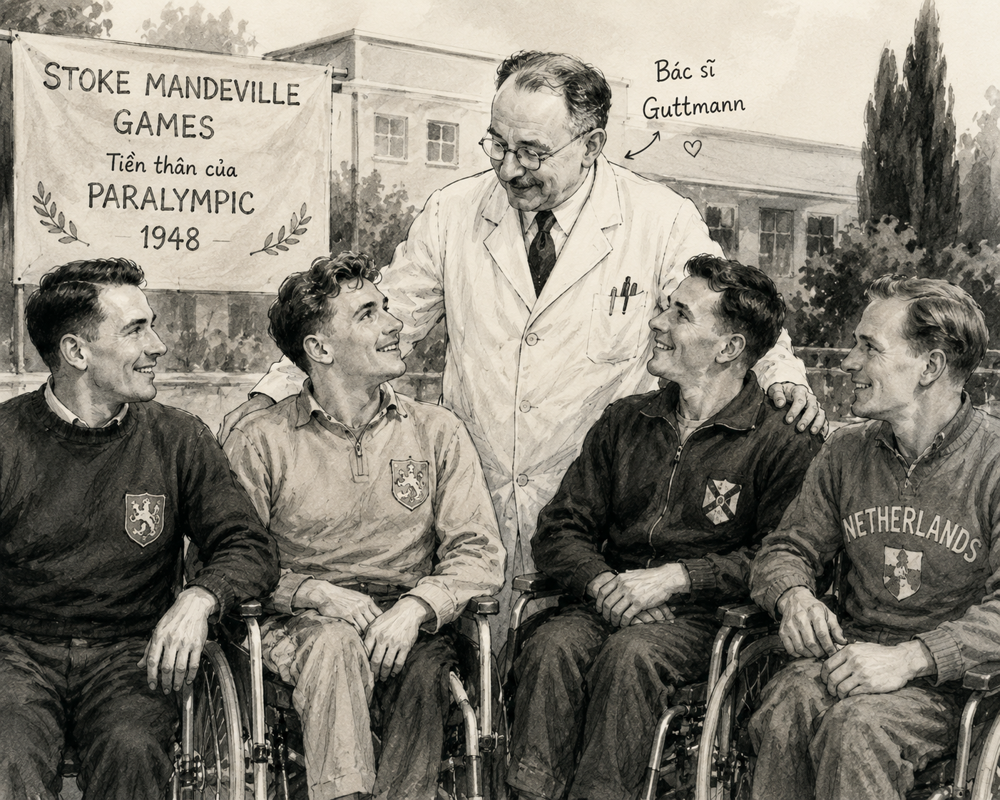

"Mười hai năm trước, một quả tên lửa RPG trên chiến trường Áp-ga-ni-xtan (Afghanistan) đã thổi bay phân nửa mạng sống của lính nhảy dù người Anh Gia-co Van Gát (Jaco Van Gass). Nhưng với ba phần tư cơ thể còn sót lại, Van Gát vẫn trở thành một biểu tượng người hùng với hàng triệu người..."
Tìm hiểu thông tin về một vận động viên hoặc một môn thể thao mà bạn yêu thích. Theo bạn, thể thao có ý nghĩa gì với đời sống con người?
Gợi ý trả lời:
Văn bản thông tin là văn bản chủ yếu dùng để cung cấp thông tin về các hiện tượng tự nhiên, thuật lại các sự kiện, giới thiệu danh lam thắng cảnh, hướng dẫn quy trình... Cấu trúc văn bản thường bao gồm: Nhan đề, Sa-pô, Các đề mục lớn, Nội dung chi tiết và Phương tiện phi ngôn ngữ (hình ảnh, số liệu, sơ đồ).
Dựa vào nhan đề và phần sa-pô, hãy dự đoán về nội dung chính của văn bản và sự ra đời của Pa-ra-lim-pích?
| Thời gian | Sự kiện chính | Ý nghĩa / Quy mô |
|---|---|---|
| 1948 | Bác sĩ Ludwig Guttmann tổ chức Thế vận hội Xe lăn Quốc tế tại BV Stoke Mandeville. | Dành cho 16 cựu chiến binh Thế chiến II bị chấn thương tủy sống. |
| 1952 | Giải đấu được tổ chức thường niên. | Trở thành phong trào thể thao quốc tế. |
| 1960 | Kỳ Pa-ra-lim-pích đầu tiên chính thức diễn ra tại Rôm (Rome). | 400 vận động viên từ 23 quốc gia tham dự. |
| 1988 | Thống nhất tổ chức cùng địa điểm và thời gian với Ô-lim-pích (Seoul). | Khẳng định vị thế và sự bình đẳng của thể thao người khuyết tật. |

Hình 1: Bác sĩ Gắt-mừn và thế hệ những vận động viên đầu tiên ở giải đấu tiền thân của Pa-ra-lim-pích (Ảnh: Ole)
"Thể thao không chỉ là sự tranh tài tốc độ hay sức mạnh, mà đối với các thương bệnh binh và người khuyết tật, đó là con đường chữa lành tâm hồn, giúp họ vượt qua nghịch cảnh và tái khẳng định giá trị bản thân trước cuộc đời."
Tên gọi bệnh viện Stoke Mandeville sau này được xem như "cánh đồng Ma-ra-ton (Marathon) của Hy Lạp" — nơi khởi phát phong trào Ô-lim-pích hiện đại. Ban đầu, các vận động viên tham gia bắt buộc phải thi đấu trên xe lăn.
Sử dụng sơ đồ tư duy hoặc bảng biểu (phương tiện phi ngôn ngữ) để tóm tắt lại tiến trình phát triển của Paralympic qua các thời kỳ, giúp việc tra cứu thông tin trở nên nhanh chóng và trực quan hơn.
Trong văn bản thông tin, việc kết hợp giữa yếu tố tự sự (kể lại câu chuyện của Van Gát, Xnai-đơ) và phương tiện phi ngôn ngữ (hình ảnh, số liệu mốc thời gian) giúp tăng tính thuyết phục, sinh động và truyền cảm xúc tới người đọc.
Câu 1: Hãy nêu khái quát chủ đề của văn bản. Cách tiếp cận vấn đề của tác giả có gì đặc biệt?
Câu 2: Phân tích tác dụng của các phương tiện phi ngôn ngữ trong văn bản.
Câu 3: Xác định các ý chính, ý phụ trong văn bản. Sử dụng phương tiện phi ngôn ngữ để tóm tắt các thông tin.
Viết đoạn văn (khoảng 150 chữ) về khả năng chữa lành của thể thao.
Trả lời 10 câu hỏi để kiểm tra mức độ hiểu bài của bạn!
Bài Tu luan: Phân tích cấu trúc thông tin của văn bản
Hãy phân tích mối quan hệ giữa nhan đề "Pa-ra-lim-pích: Một lịch sử chữa lành những vết thương" và các đề mục nhỏ trong văn bản.